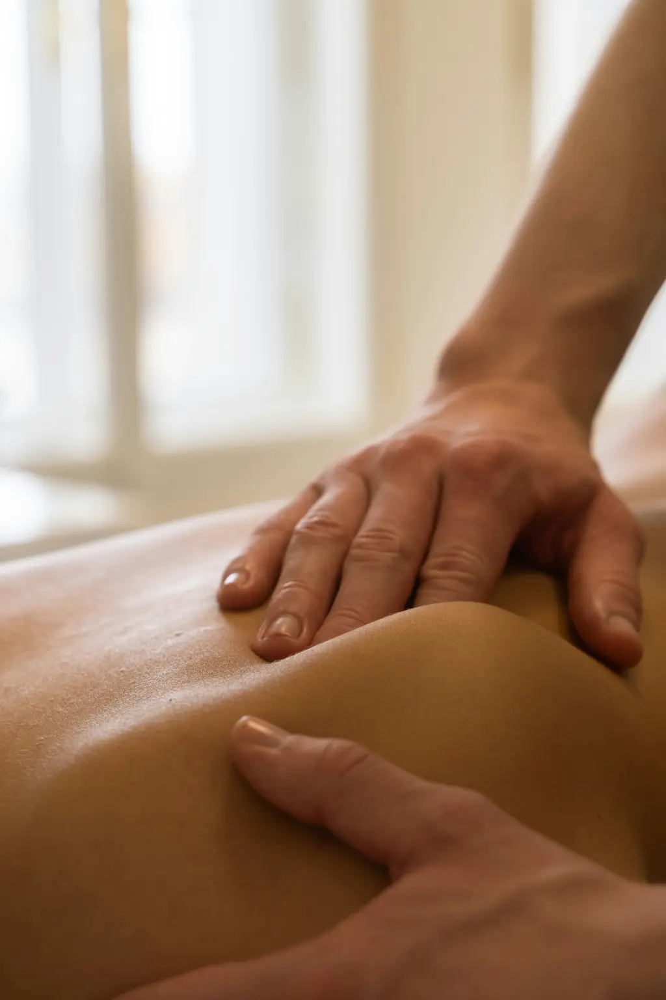
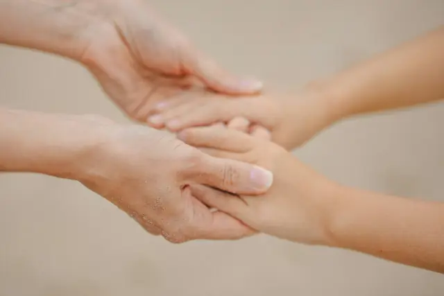
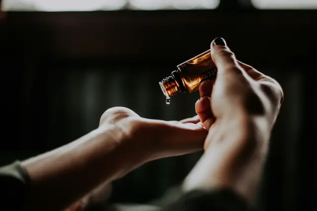
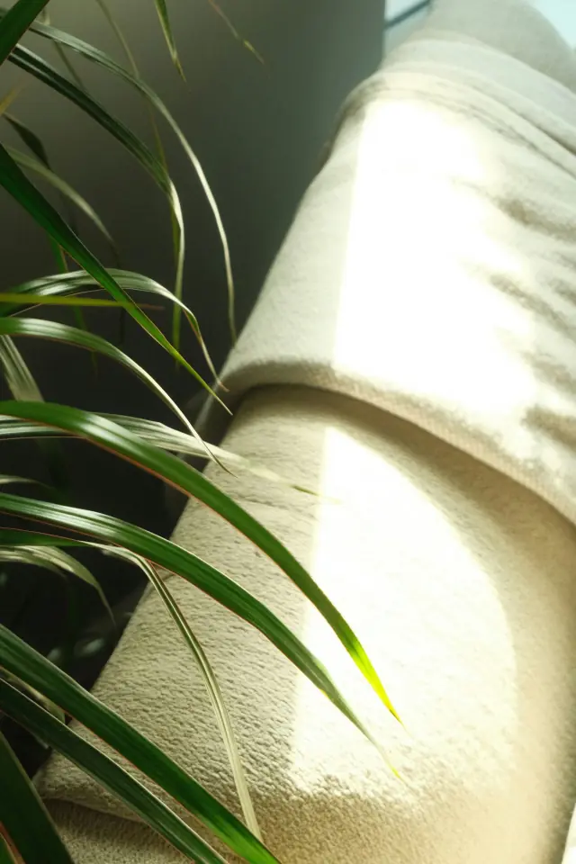
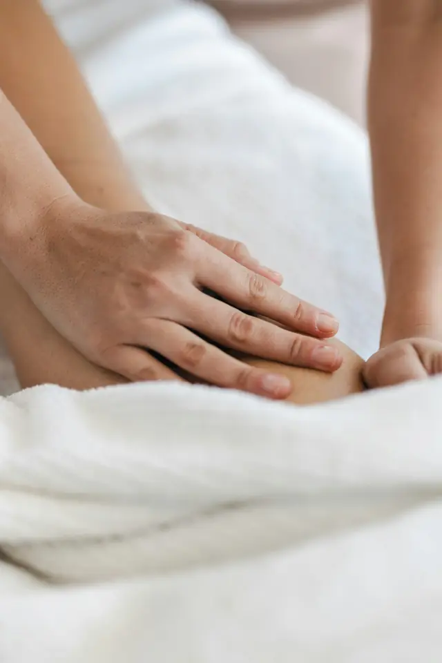
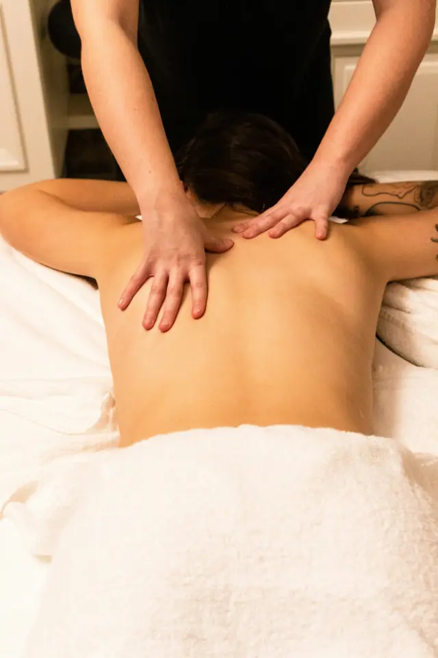
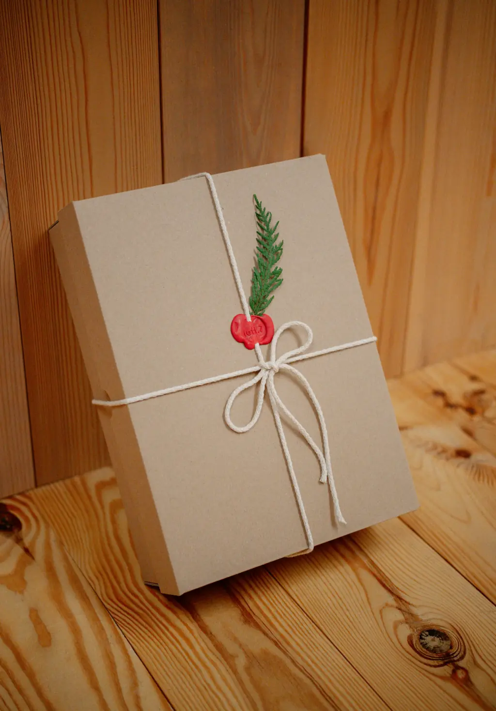

Fedemassaggi, massaggi terapeutici a Comano e Lugano

È il tempo che hai perduto per il tuo corpo che ha reso la tua anima così importante.
Chi sono
Ascolto il corpo

prima ancora di toccarlo. Poi lavoro con calma

,
semplicità e attenzione

alla persona.
Ho sempre osservato la postura delle persone e ho sempre avuto a cuore il loro benessere. Da questa attenzione è nata la passione per il massaggio, e da questa passione è nata Fedemassaggi.
Le persone vengono da me per un fastidio fisico o perché hanno bisogno di staccare. In entrambi i casi parto dall'ascolto, e adatto ogni seduta a chi ho davanti, con professionalità e serietà.
Federica Meier De Vecchi
- Riconoscimento
- RME dal 2019, casse malati
- Formazione
- CSTM, OLEOS e corsi di aggiornamento
- Lingue
- Italiano, Deutsch, Français, English, Español
- Pagamenti
- Contanti, TWINT, fattura
Trattamenti
Cosa ti serve oggi?
-
Massaggio terapeutico e classico
Scioglie tensioni e contratture, migliora la circolazione e restituisce mobilità a muscoli e articolazioni. Per schiena, collo e spalle.
-
Massaggio sportivo
Prima della gara prepara i muscoli allo sforzo, dopo accelera il recupero e aiuta a prevenire gli infortuni.
-
Miofasciale
Un lavoro lento e profondo sul tessuto connettivo per liberare le aderenze e ridare elasticità. Per rigidità e dolori persistenti.
-

Drenaggio linfatico
Manovre delicate e ritmiche che stimolano la circolazione linfatica, riducono gonfiore e ritenzione e lasciano le gambe leggere.
-

Rilassante e decontratturante
Un massaggio avvolgente che allenta le tensioni accumulate e calma la mente. Il tuo tempo, solo per te.
-
Hot stone
Pietre basaltiche calde appoggiate e fatte scorrere sul corpo: il calore scende in profondità e scioglie i muscoli.
-
Riflessologia plantare
Pressioni mirate su punti del piede che, secondo la riflessologia, corrispondono a organi e apparati. Riequilibra e rilassa.
-
Maderoterapia
Un massaggio con strumenti in legno di forme diverse che modella, tonifica e stimola la circolazione.
Ogni seduta dura almeno sessanta minuti. RME: trattamento rimborsabile dall'assicurazione complementare.
Non sai quale scegliere? Scrivimi ↗60minuti, solo per te
- PrimaTi ascolto: come stai, cosa senti, di cosa hai bisogno.
- DuranteIl trattamento, pensato per te, senza fretta.
- DopoQualche consiglio per far durare i benefici.
Lo studio
Comano,
sopra Lugano.
- Via Centro TV 1, 6949 Comano
- Parcheggio privato
- Fermata del bus a pochi passi
- Indicazioni ↗
Buoni regalo
Regala
un'ora
di benessere.
Buoni personalizzati, per il trattamento che preferisci. Per un compleanno, per Natale o semplicemente per dire grazie.
Chiedi un buono ↗
Adesso
- Novità
Maderoterapia, il massaggio con strumenti in legno. Scopri
- Promozioni
Pacchetti di più sedute e offerte stagionali: chiedimi quelle in corso.
Buono a sapersi
- Quanto dura una seduta?
- Almeno 60 minuti, così c'è il tempo per ascoltarti prima di iniziare e per lavorare con calma.
- È rimborsato dalla cassa malati?
- Sono riconosciuta RME: massaggio terapeutico, classico e linfodrenaggio manuale possono essere rimborsati dall'assicurazione complementare. Verifica la tua copertura.
- Come si paga?
- In contanti, con TWINT oppure su fattura.
- Come si prenota?
- Con un messaggio su WhatsApp o una telefonata al 079 475 44 35. Gli orari li concordiamo insieme.
- Dove si trova lo studio?
- A Comano, sopra Lugano, in Via Centro TV 1. Parcheggio privato e bus a pochi passi.
- In che lingue?
- Italiano, tedesco, francese, inglese e spagnolo.
Contatti
ScrivimiSu WhatsApp o al telefono: ti rispondo appena posso e troviamo insieme il momento giusto.
Telefono e WhatsApp
Studio
Via Centro TV 1
6949 Comano
Orari
Su appuntamento,
orari flessibili
Social